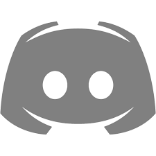
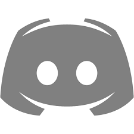

Frequently Asked Questions
How will my money be used?
Your money will be used to pay for the costs of running The Odin Project. This includes paying for the servers that host the website, the domain name, and any other costs associated with running the project. Your money does not go towards paying the maintainers. All of our expenses are documented directly on the Open Collective website.
How can I donate?
You can donate via Open Collective, by setting up a recurring donation or with a one time payment.
What form of payments can I use?
You can usually pay by credit card through our Open Collective page. They also offer bank transfer, Paypal, or other means in addition to or instead of credit card payments. When you go through the contribution flow, you'll see all the available payment methods.
What happens if you receive more donations than needed?
Any extra money that we receive will be used to improve The Odin Project, or will be saved for future needs. This includes paying for new features, paying for new servers, and paying for any other costs associated with running the project.
How do I cancel my recurring donation?
You can cancel your recurring donation at any time through your Open Collective profile.
What are the benefits of donating?
Your donation helps us continue to provide a world-class and completely free coding curriculum for anyone and everyone eager to learn. We believe that this material should be available for free to anyone that needs it, and donations from those that have the means to contribute help keep it available for everyone! In additon to the above, donors get a special 'backer' role in our discord server as a small bit of recognition.
How do I get the 'backer' role on Discord?
Use the /opencollective command in our discord server to verify your Open Collective account. You will then be automatically given the 'backer' role. You will be prompted to provide your Open Collective username, which is found in the URL of your Open Collective profile. For example, if your profile URL is https://opencollective.com/rick-astley your username is rick-astley. If you want to remove the role for any reason, contact staff on discord through ModMail.
Do users with the 'backer' role get any exclusive benefits?
No. The role is just a way for us to show our appreciation for your support.
Does becoming a donor mean I get priority support in the chat?
No. We feel strongly that everyone should be treated equally in our community, regardless of whether or not they are a donor.
I cannot afford to donate right now. What are some other ways I can help The Odin Project?
You can help us by contributing to our open source projects. You can also help us by spreading the word about The Odin Project. Tell your friends, family, and coworkers about us. Share our content on social media. The more people that know about us, the more people we can help.
What ever happened to Thinkful? Viking Code School?
When The Odin Project was created by Eric Trautman in 2013, it was primarily funded by Eric's other project, the for-profit Viking Code School. Eric wanted Odin to be free, and kept it that way by placing a small ad for Viking Code School on the website. In late 2017, Viking Code School was acquired by Thinkful. As a part of that acquisition, Thinkful agreed to continue funding The Odin Project, in return for an ad on The Odin Project website. In 2019, Thinkful was acquired by Chegg. Chegg was nothing but supportive, and continued funding us the entire time. However we began to feel that it might be in our best interest to become self-funding, to avoid the risk of being acquired by a company that might not be as supportive. In 2023, we decided to begin the process of parting ways with Chegg, and become self-funding. We are now funded entirely by donations.
I still have questions. How can I contact you?
You can contact us through modmail on our discord server, or through email. See our contact us page for details.
THE ODIN PROJECT
High quality coding education maintained by an open
source community.
 



About us
about
blog
success stories
support
FAQ
Contribute
Contact us
guids
Community guids
installation guids
legel
Terms
Privacy
© 2023 The Odin Project. All rights reserved.